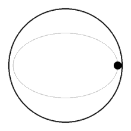

The classical hydrodynamical theory assumes that perfect slipping takes
place, whereas in actual fluids the surface layers of the fluid are churned up
into eddies. In the case of motions which depend on the conditions at the
surface, therefore, no agreement is to be expected between theory and experi
ment. This class of fluid motion, unfortunately, includes all cases where a
solid moves through a fluid which is otherwise at rest
On the other hand, there are types of fluid motion which only depend to a
secondary extent on the slip at the boundaries. For this reason theoretical
predictions about waves and tides, or about the motion of vortex rings, are in
much better agreement with observation than predictions about the motion of
solids in fluids

A unit of fluid (represented by the black dot) is pushed back to the point it is shifted from
1Taylor Geoffrey Ingram. 1921. Experiments with rotating fluids.